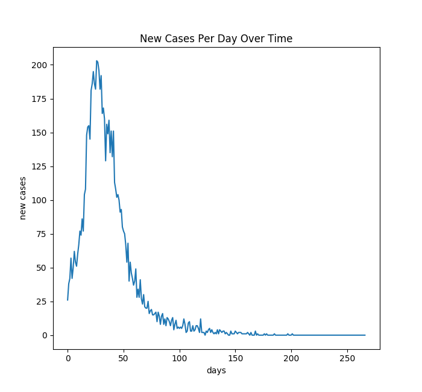
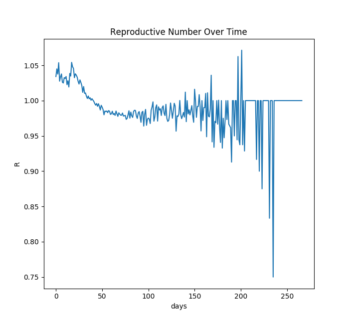
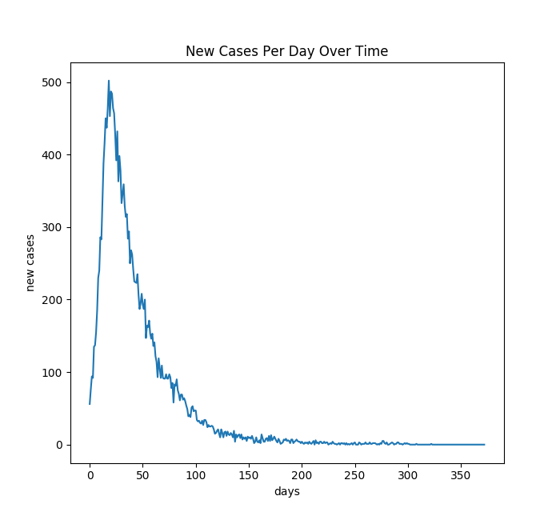
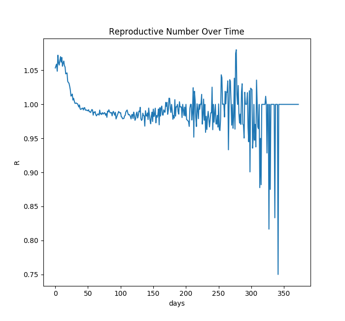
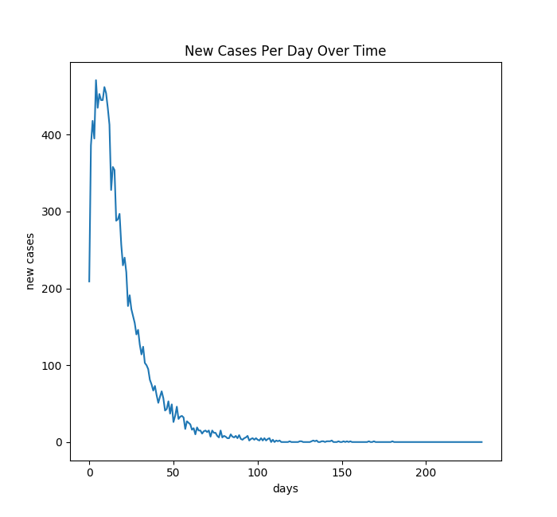
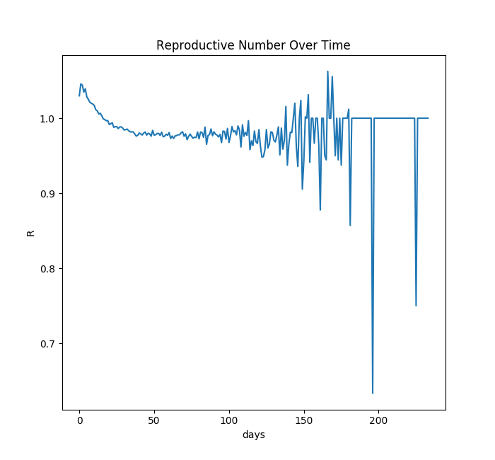
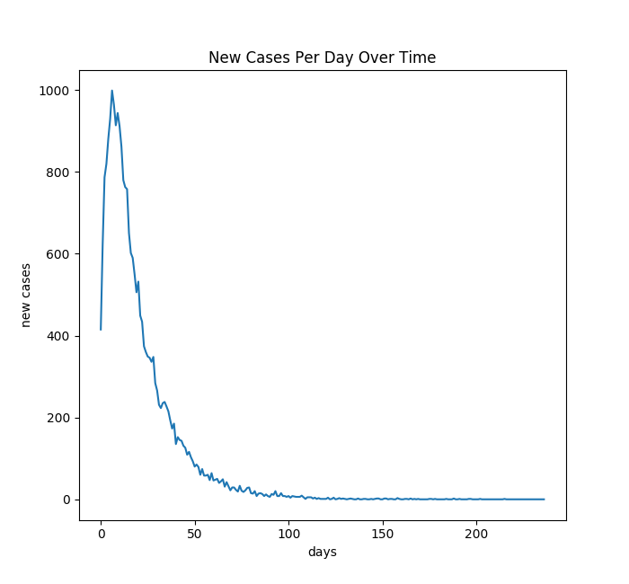
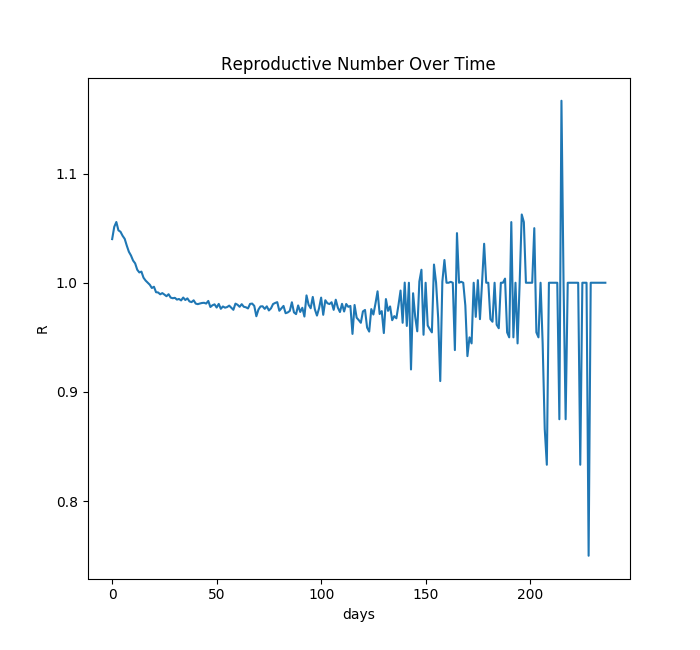

In an email sent on March 11, President Ryan announced that the University of Virginia would take major operational changes to slow the spread of the COVID-19 disease in the University of Virginia community. UVA would soon move all classes online and effectively prohibit students from returning to grounds for the rest of the spring semester. At the time, these changes were met with much controversy. In the coming weeks after the decision, not only the university community would be affected by this decision. Fourth-year students were not able to enjoy their last semester on grounds or have their graduation ceremony; but also small businesses and restaurants which depend on students had to close, jobs were lost and, overall, it is clear that the Charlottesville community has also been economically impacted by this decision.
In this project, we try to understand how much did this decision taken by the University diminish the spread of the disease in Charlottesville. To do so, we simulate a contrafactual: how much had the spread of the disease been if no decision was taken and students came back to grounds after the spring break?
To build this simulation we used a model that incorporates historical epidemiological parameters of the COVID-19 spread, in combination with a dataset from NASA approximating Charlottesville’s geographical distribution of its population, population density and demographics. Data Reference
Case 1: few starting infected, no students
Resulting Death: 112
 Case 2: few starting infected, with students
Resulting Death: 187
 Case 3: many starting infected, no students
Resulting Death: 206
 Case 4: many starting infected, with students
Resulting Death: 312
 When 1% of the population started sick, preventing the return of UVA students reduced total deaths by 40% from 187 to 112. When 10% of the population started sick, no student return reduced total deaths by 34% from 312 to 206.
Most of the deaths are elderly residents, not students. However, the students, despite being geographically isolated from the rest of Charlottesville and low-risk, still increase the overall spread rate, and thus deaths.
Note that these simulations, like all disease simulations, are very limited. There is huge uncertainty, and the exact spread rate is very hard to predict.
Additionally, these simulations do not capture the effects of hospitalization and pressure on the medical system. Spikes in hospitalization cause increases in the mortality rate. This would likely further exacerbate the deaths in the scenarios where UVA students return, since the quick increase in spread would add pressure on UVA Hospital.
Finally, many of the parameters of the simulation could be further tuned by regressing on datasets from other affected areas. For example, disease spread radius, incubation period, and recovery rate were all estimated ad hoc from figures seen in news articles, but could be improved by fitting probability density functions to data from a similar location, like a university-town in Italy.
Despite these shortcomings, the simulation is still effective at showing the relative differences between the scenarios of interest. We hope that viewers learn from spirit of the simulations, but do not necessarily recommend making reopening and returning decisions based on these results.
This simulation was implemented in Pure Python, with the help of matplotlib for data visualization. Source code can be found here.
Our simulation includes 3 main entities, people, homes, and grocery stores. Grocery stores are simply locations that were manually added, and included 2 Krogers, 1 Wegmans, 3 Food Lions, 1 Walmart, 1 Whole Foods, 1 Harris Teeter, and 1 Trader Joe’s. Homes are also simply locations, which were normally distributed around the centroids in NASA Population density data. People have a location, which is determined by their behavior described below.
People are in one of four states: healthy, asymptomatic, sick, and removed.
When healthy, people engage in a random walk. Periodically, people go to the grocery store. We make the assumption that people always go to the closest grocery store. Going to the grocery store involves teleporting to a random location chosen from a uniform distribution in a 60m x 60m square around the grocery store. We chose for people to teleport since the primary mode of transportation in Charlottesville is car, and disease spread is impossible in the car. Additionally, all people periodically teleport to a random location within the simulation area. This simulates people’s reluctance to socially isolate, as people sometimes visit friends or go to popular locations. People are assigned a distancing factor, which determines the frequency of these random teleportations. Most people have a very low distancing factor, meaning they rarely teleport to random locations. However a small proportion of the population has a high distancing factor, meaning some few people are fairly unwilling or unable to socially isolate.
When asymptomatic, people behave exactly as they do when they are healthy. When sick, people simply stay at home. However, in both states, people are capable of spreading the disease. The spread of disease between two given people is determined by their distance. The pair’s distance is compared to the absolute value of a sample from a normal distribution centered at zero. If the pair’s distance is lesser, the disease spreads. Because Charlottesville along with on-grounds housing has a population or ~51,000, testing for disease spread between every person is infeasible. To make infection detection tractable and to introduce a representation of maximum gathering restrictions, all people are inserted into a k-tree by distance to the current node’s representative person. Then infection detections are brute-forced for each path from root node to leaf node. This definitely ignores many infections that should occur. However, since the list of people is shuffled at each timestep, the tree structure constantly changes, so prolonged proximity will eventually spread the disease, and fleeting spread is limited by k, the children-per-node, representing the maximum gathering size. To our knowledge, this is a novel algorithm.
When “removed”, people cannot spread the disease, and we make the assumption that they cannot receive it again. Therefore, their behavior has no further impact on the simulation, so they simply stay at home. People can become “removed” by either recovering from the disease successfully or dying. Mortality rate is determined by age, which is assigned by the age range data in the NASA dataset of population density.
State transitions are determined by a series of random processes. Transition from healthy to asymptomatic is determined by the infection detection process described above. The onset of symptoms is determined by a Poisson process with an expected delay of 5 days. Recovery is also a Poisson process, but with an expected duration of 15 days.
UVA Grounds is not technically within city limits, which means that the population density data did not include any on-grounds students. To include on-grounds students, we generate student-aged people normally distributed around manually added centroids at Gooch-Dillard, Ohill, Old Dorms, Lawn/Bice, Lambeth, and North Grounds. Conversely, off-grounds students are included in the NASA population density data, so to simulate the absence of UVA students, student-aged people are removed from the simulation in order of distance from the centroid of grounds at the intersection of McCormick and Emmet.